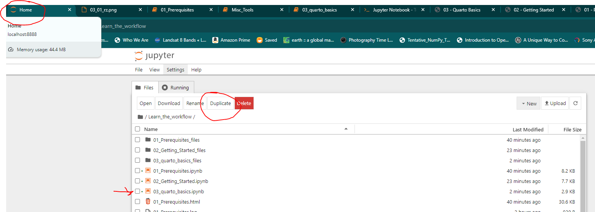

02 - Getting Started
1 Download Software
1.1 Install Anaconda
- Download Anaconda:
- Go to the Anaconda Distribution website.
- Download the installer for your operating system (Windows, macOS, or Linux).
- Install Anaconda:
- Run the downloaded installer.
- Follow the installation prompts, accepting the default settings.
1.2 Install GitHub Desktop
- Download GitHub Desktop:
- Go to the GitHub Desktop website.
- Download the installer for your operating system (Windows or macOS).
- Install GitHub Desktop:
- Run the downloaded installer.
- Follow the installation prompts.
- Sign In to GitHub Desktop:
- Open GitHub Desktop after installation.
- Click “Sign in to GitHub.com” and enter your GitHub account credentials.
1.3 Get a GitHub Account
- Visit GitHub’s Website:
- Go to GitHub.
- Sign Up:
- Click on the “Sign up” button in the top right corner.
- Enter your email address, create a password, and choose a username.
- Follow the prompts to complete the sign-up process, including email verification.
- Set Up Your Profile:
- Once your account is created, you can set up your profile by adding a profile picture, bio, and other information.
1.4 Complete the introduction-to-github short course
- Who is this for: New developers, new GitHub users, and students.
- What you’ll learn: We’ll introduce repositories, branches, commits, and pull requests.
- What you’ll build: We’ll make a short Markdown file you can use as your profile README.
- Prerequisites: None. This course is a great introduction for your first day on GitHub.
- How long: This course takes less than one hour to complete.
In this course, you will:
- Create a branch
- Commit a file
- Open a pull request
- Merge your pull requestl
1.5 Clone this Repository to Your Computer Using GitHub Desktop
- Clone Repository:
- Open GitHub Desktop.
- Click on “File” -> “Clone repository”.
- Select the repository from GitHub online (https://github.com/Ryan3Lima/ATUR-WIKI)
- Choose the local path where you want to clone the repository. By default it should clone to ‘~USER/documents/Github/’
- Click “Clone”.
1.6 Install Quarto
Visit Quarto’s get-started page
Download Quarto CLI (from previous page, follow steps)
1.7 Open Anaconda Prompt
- Open Anaconda Prompt:
- Search for “Anaconda Prompt” in your system’s applications and open it.
Now instead of using Command line we will be using anaconda prompt which is another command line interface
1.8 Change Directory to the Repository
- Navigate to the Repository Directory:
(base) C:\Users\YOUR_NAME> cd C:/Users/YOUR_NAME/Documents/Github/YOUR_REPO
(base) C:\Users\YOUR_NAME\Documents\Github\YOUR_REPO>notice the (base) thats showing you that you are in your ‘base’ anaconda environment. I generally do not install anything in this environment except maybe jupyter notebook, many libraries conflict so you want to use different environments for different tasks.
You will see (base) change to (ENV_NAME) when you activate it in the next steps.
Also be careful with slashes in paths, your computer (if its windows) will defualt to a backslash ‘' anaconda prompt is smart enough to run things anyway with back slashes, but at various times you might have to change the backslashes to’/’ forward slashes particularly in markdown language
2 Next Steps
Now that everything is installed lets get cracking
2.1 Update Conda
You generally will want to do this every few days or everytime you go to use this workflow
(base) C:\Users\YOUR_NAME\Documents\Github\YOUR_REPO> conda update conda2.2 Create a Conda Environment
(base) C:\Users\YOUR_NAME\Documents\Github\YOUR_REPO> conda create --name ENV_NAME python=3.9Activate the Environment
(base) C:\Users\YOUR_NAME\Documents\Github\YOUR_REPO> conda activate ENV_NAME
(ENV_NAME) C:\Users\YOUR_NAME\Documents\Github\YOUR_REPO>Notice the change from (base) to (ENV_NAME)
2.3 Add Libraries to Your Environment
install jupyter and jupyter lab in the environment
(ENV_NAME) C:\Users\YOUR_NAME\Documents\Github\YOUR_REPO> pip install jupyter jupyterlabinstall Matplotlib and Plotly
(ENV_NAME) C:\Users\YOUR_NAME\Documents\Github\YOUR_REPO> pip install matplotlib plotly2.4 Open the Sample Jupyter Notebook
(ENV_NAME) C:\Users\YOUR_NAME\Documents\Github\YOUR_REPO> jupyter notebookNow a browser tab should open to your HOME screen for juptyer, in it you will see lots of things, click and highlight ‘03_quarto_basics.ipynb’ and duplicate it. That way you have your own copy you can play with without messing up the master version of the notebook.
